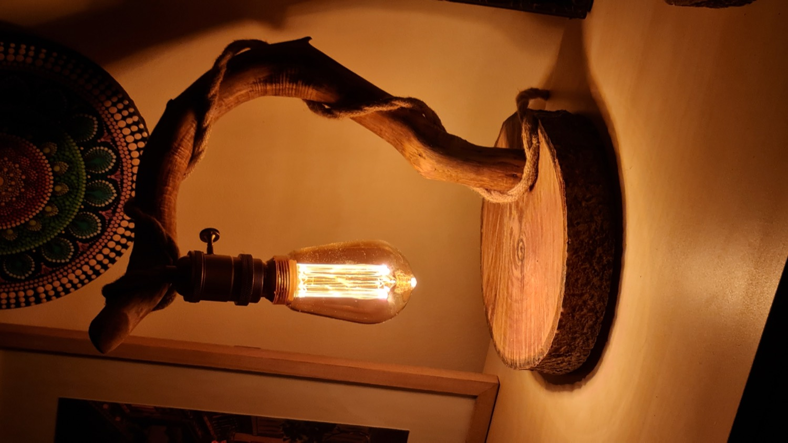
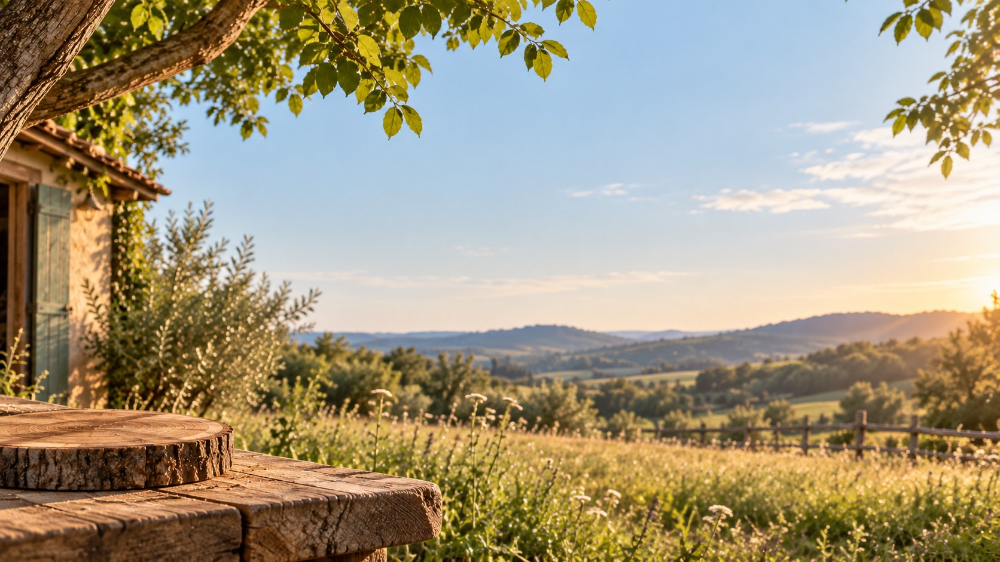

The Arc
€240–290Table lamp. Weathered branch, bark-edged log slice, hemp rope.
420–480 mm · built to the branch
Light & Matter · handmade lighting, one of one
Every lamp starts as something already finished: a branch the water bleached for a decade, a slice off a fallen walnut, now and then a piston or a headlamp bezel that stopped being useful in 1974. I dry it, cut it, polish it, protect it with special laquer, and wire it myself as an authorized electrician.

The collection
One found object per lamp, never a pair. Open a lamp to leaf through its photographs.
Table lamp. Weathered branch, bark-edged log slice, hemp rope.
420–480 mm · built to the branch
Table lamp. A retired B-flat trumpet stood on its bell, pleated drum shade.
approx. 800 mm · one of one
Pendant. 1950s telegraph-line glass, walnut cap, braided flex.
Ø90 × 110 mm · a twin can be made
Desk lamp. Brass sextant arc, vernier scale intact, oak foot.
460 × 240 mm · in the studio
Where it comes from
Nothing is bought new except the socket, the flex and the oil. Everything else is found, and what it was stays visible.
Gathered by hand along riverbanks and woodlot edges, in the week after storms. Only wood that is already dead and loose. Never cut, never taken off anything still living.
Pulled from scrapyards and farm sheds. Degreased, wire-brushed by hand, then clear-lacquered with the pitting left exactly as found. That surface took forty years to make.
The drawer everything else lives in. Some of it waits two years for the right piece of wood to turn up, and some of it never gets used at all.
How a lamp happens
The order matters. Skip the drying and the wood splits around the socket a year later, in someone's living room.
Walked after storms, along water and woodlot edges. Only what is already dead and loose. Most of what I pick up goes back.
Nov – Mar · a few hours a weekWashed, bark taken back to the hard wood underneath, then stacked in an open shed with air on all four sides. No kiln: kiln-dried branch wood checks along the grain.
6 – 9 monthsA slice off a fallen trunk, 40 mm thick, bark left on the edge. Flattened by hand until it sits on a table without a single rock.
Half a dayThe branch decides where the socket goes, not the drawing. Blind mortise into the base, brass E27 with a key switch, nothing structural held by glue.
2 – 4 daysHemp rope spiralled from socket to base with the flex inside it. Strain relief at both ends, then continuity- and insulation-tested before it leaves.
Half a day · tested by an authorized electricianThree coats of hardwax oil, 24 hours between, cut back with 400 grit. No stain, ever. That honey colour is the wood and the oil, nothing else.
4 days
The workshop
The bench is outside, under a walnut, and it stays there until November. That is most of why these lamps look the way they do: the wood is found within a morning's walk of where it gets cut, and the first time a finished lamp is switched on, it is switched on in the yard.
I don't make series. Two lamps off the same tree will still be two different lamps, and if you ask me for a matching pair I'll tell you honestly which one to take. What you get is a signed piece, a written note of where every part of it came from, and someone who will rewire it for you in ten years.
Commissions
A grandfather's tool, a part off the car you sold, a branch you carried home from a holiday. It works best when the material already means something.
The object, or the corner of the room it has to light. Shelf depth and a rough sense of how dark you want it is enough to start.
Reply within 2 daysA hand drawing, the materials I'd use, and a fixed price. No fee for this, and no obligation. Half up front if you go ahead.
Within a weekPhotos as it goes. Delivered crated, with the bulb in it and a card listing where each part came from.
3 – 5 weeksWrite